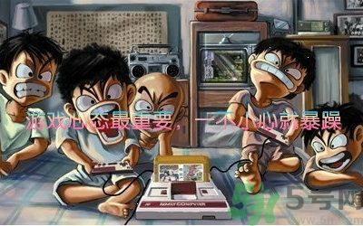

德国boy
相信大家都知道这是谁，他就是当初红极一时的德国boy，他的这段表演可谓是游怒证的典型代表。随着这几年游戏市场的火爆，越来越多的人开始下载游玩不同类型的游戏，也因此让更多人在不知不觉中就得了以上所说的游怒症，但是游怒症并不是病，只是心理或者心态的问题更多一点吧！
何谓“游怒症”？如果你在玩游戏时，也有以下行为，就说明你存在一定程度的“游怒症”，要引起注意了：
1. 高度紧张，极度焦躁、猜忌怀疑，信任全失
2. 网络对喷，威胁挑衅
3. 扔手柄、砸键盘、丢手机、踹椅子、拍桌子、砸屏幕
4. 送人头，放弃抵抗，拔网线，秒强退
5. 暴力发泄，攻击他人
上述表现无疑是不可取的，你不但可能会失去你的好朋友，没人再愿意和你玩，更有可能引发更多更大的问题。但是问题的产生必有其原因，我总结有以下两点。
1. 你队友和你的游戏态度不同
让人易怒的游戏基本都是竞技类游戏，因为大部分人只有在事关胜负的时候才会有情绪波动，再者，人也不会蠢到对单机游戏中的AI发脾气，那么问题来了，和体育中的球类竞技一样，电子游戏的竞技也需要队友有良好的技术和配合，但是人和人对游戏的理解不一样。有的人玩游戏就是图一乐，怎么好玩怎么来，并不在乎输赢。有的人则相反，打游戏时非常的专注，愿意花心思去研究如何取得胜利，也比较在乎输赢，如果这两种人一起玩游戏，后者有情绪上的波动也实属难免，所以，如果你是因为后者而患上了游怒证的话，建议你换换队友，这样对你，对你的朋友，都是一种解脱，道不同不相为谋嘛，起码在游戏这方面。
2. 你是一个喜欢找理由甩锅的人（在游戏里）
如果你游戏技术一般，打游戏还特别喜欢喷人，那大概率就是这个原因了。这完全就是个人的性格问题了，赢了就说自己C，输了怪队友没配合，完完全全就是输不起。一定要多反思自己，控制自己的愤怒，控制自己想要甩锅的欲望，每次想要生气之前提醒一下自己，我自己一点问题也没有吗？就算我没问题，至于发这么大的火吗？再者如果一直甩锅队友，这样就不会反思自己的游戏理解，很可能一直菜下去，然后一直喷队友，进而形成恶性循环。最后，希望对号入座诸君能够努力不再当甩锅侠，争做高素质游戏玩家。
返回